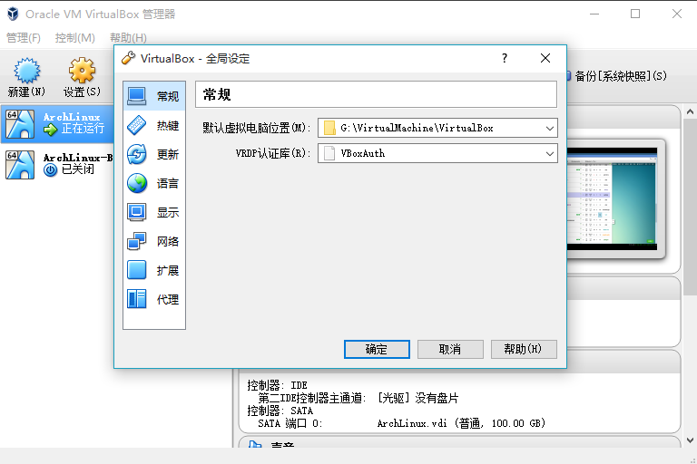
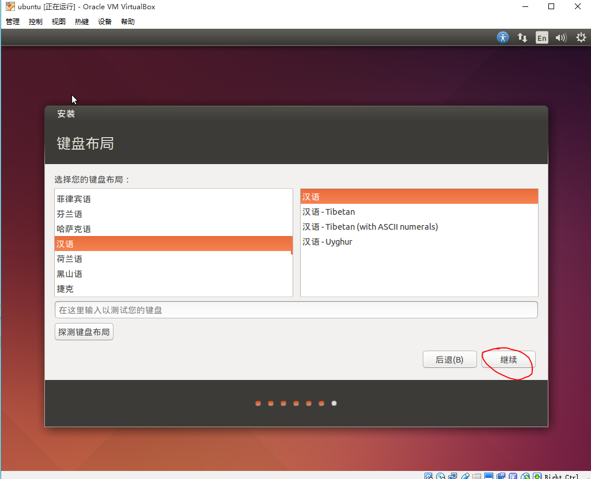
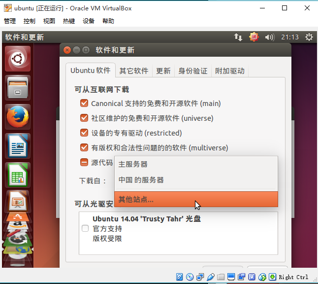

虚拟机安装Linux发行版
和多数人推荐使用双系统安装Linux不同，我推荐使用虚拟机安装和使用Linux，原因如下:
- 目前计算资源过剩，虚拟机能满足普通应用场合性能要求
- 在使用Linux的同时能够使用Windows下的优秀软件(Office等)
- 安装双系统对新手来说维护成本太大
- 虚拟机管理和备份系统非常方便
目前流行的虚拟机有VMware和VirtualBox，Mac平台下最流行的是Parallel Desktop。本节采用免费小巧且功能完备的VirtualBox在Windows下安装Linux发行版。
VirtualBox安装、配置
首先下载VirtualBox安装包，双击运行安装，完成后启动VirtualBox
Ctrl+G打开全局设定，将默认虚拟电脑位置修改到空闲空间较多的分区下的文件夹内

2015-10-26 Troubleshooting:对于不能安装或正常使用VirtualBox的原因，总结如下:
不能新建虚拟机或新建了无法运行:破解了windows系统主题导致系统的uxtheme.dll文件被修改。这个bug首先要怪Microsoft，设计了一套复杂而又糟糕的主题定制系统；其次要怪Oracle，没有考虑到这个问题。与其麻烦地恢复这个文件，建议换用vmware作为虚拟机。
参考:
只能创建32位虚拟系统且性能极差: 没有开启虚拟化技术或者被Hyper-V独占，解决方法:在BIOS里面开启CPU的虚拟化技术支持，然后禁用windows的Hyper-V功能。原因和解决方法见如下参考
参考:
安装Ubuntu 14.04
14.04版本属于LTS(Long Term Support)版本，具有相对稳定且版本较新的软件仓库，适合日常开发使用。
打开VirtualBox, Ctrl+N新建虚拟机，点击专家模式
在名称一栏输入ubuntu,会自动设置为64位版本的Ubuntu,内存大小默认选择768MB，如果机器内存充足，可以选择更大的内存，然后点击创建
设置虚拟磁盘的大小为20GB，点击创建完成新虚拟机的创建。
选择ubuntu后，点击设置，进入网络选项卡，将连接方式选择为“桥接网卡”，然后点击确定完成设置。这样虚拟机将会分配独立的ip地址，方便后续的使用
在VirtualBox的主面板选择双击ubuntu或选定ubuntu后点击启动
在弹出的对话框中点击文件夹图标，打开镜像选择对话框
选择之前下载的Ubuntu安装镜像，点击打开，然后单击启动，启动安装界面
然后会出现安装界面，左侧边栏可以选择系统语言，推荐入门者使用简体中文，然后点击安装Ubuntu
点击继续
点击默认设置
点击继续
点击继续

点击继续

设置用户名和密码
等待安装完成
安装完成出现以下界面
在重启进入新系统之前，卸载安装镜像:设备->分配光驱->取消选择ubuntu安装镜像
然后点击重新启动,安装完毕！
ubuntu软件仓库镜像设置
Ubuntu的软件仓库因为是开源的，所以各大开源镜像站均有其软件仓库的镜像。使用不同的镜像，速度差异甚大，在国内推荐使用中科大或者交大的镜像。设置方法如下：进入系统后，会提示有软件更新，暂时不更新，点击设置按钮。
在弹出的对话框中选择ubuntu软件选项卡，选择其他站点...

系统会按照镜像站的速度排序，因为是校内环境，交大的ftp开源镜像站排在首位，选择他!
输入自己的账户密码，点击授权
注意:在涉及到修改系统全局设置等风险操作时，需要强制输入密码进行授权，这是一种安全机制。
然后点击窗口左上角的关闭按钮，这时会提示刷新软件仓库的缓存，点击重新载入
等待软件仓库缓存刷新完毕
打开命令行!
点击Ctrl+Alt+t，启动终端,会弹出一个类似于Windows的CMD的命令行界面，这是 ubuntu的终端模拟器，能够执行bash指令
现在输入第一条命令！输入sudo apt-get install build-essential安装基本的开发套件
首先会提示输入密码(因为安装软件是一个修改全局系统的指令，需要授权)，注意输入密码的时候不会有*提示符，这也是一种安全机制，输入完毕后点击回车键，则会提示需要安装的软件包以及系统空间的改变等情况，输入Y并回车，开始安装(下载的过程会非常迅速)。
之后的大多数操作，都是在命令行里面完成，这种情况之后不再截图，当看到类似于
$ commands
时表示在终端中输入commands命令，$是命令行提示符，表示用普通用户执行。
安装VirtualBox增强功能
点击设备->安装增强功能
打开终端，依次输入(将用户名替换为自己的用户名):
$ cd /media/[用户名]/VBOXADDITIONS_5.0.6_103037/ # 进入存放VBox增强功能的目录
$ ls # 查看当前目录的文件
$ sudo ./VBoxLinuxAdditions.run # 用超级权限执行安装程序
注意第一行cd是unix类系统切换目录的指令，第二行ls可以查看当前目录的文件，第三行sudo可以允许普通用户以超级权限执行指令。
等待安装完成，输入sudo reboot重启系统。
重启系统之后会发现分辨率明显改善，调整窗口大小，会自动适应新的分辨率，当然分辨率提升只是增强功能的一部分，之后我们会了解其它功能。
2015-10-26 Troubleshooting:使用VMWare作为虚拟机的同学可以参考Ubuntu Documentation-VMware/Tools。
推荐的其它发行版以及安装指南
鼓励尝试不同的发行版，然后...过渡到Archlinux ;-)
Homework
#也是命令提示符，搜索一下，看看它表示什么?用
cd进入/usr/local目录，然后输入pwd查看输出，输出表示什么?然后输入cd不加参数，再输入pwd查看输出是什么?同时注意，命令行提示符有什么变化?用
apt-get安装tmux(目前只需要知道它是一个软件即可)，提示:输入sudo apt-get install tmux，实际安装前需要输入Y确认吗?安装完成后再输入sudo apt-get install -y guake安装guake，这次还需要提示输入Y确认吗?一般的命令行程序都支持附带参数，如
cd后的路径，apt-get后的install或update等。尝试给ls添加参数执行，看看输出是什么? 提示: 参数-a,-l,-lh等等。输入
df -h查看各个分区的用量，20GB够用吗?我们用到了
sudo reboot来重启linux，现在尝试输入sudo shutdown -h now试试是干什么的?然后输入sudo shutdown -r now试试呢?还记得提示软件更新吗？打开终端，输入
sudo apt-get update && sudo apt-get upgrade，理解一下这个指令做了什么?